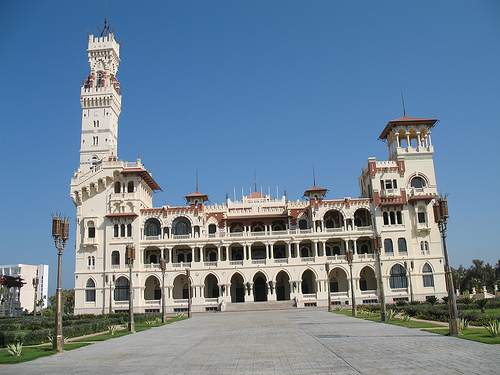
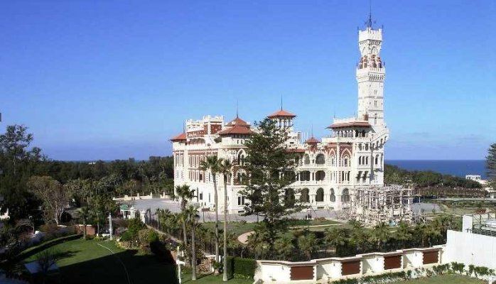
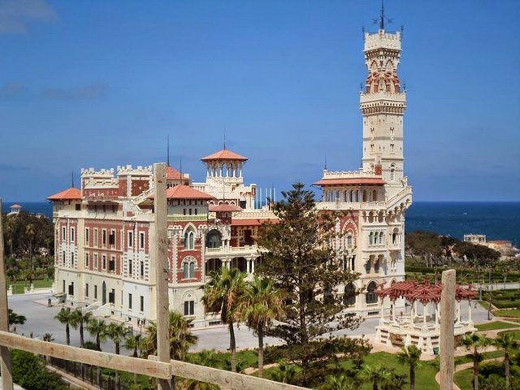

يتميز قصر المنتزه montaza palace بأنه احد اهم واجمل الاماكن السياحية في الاسكندرية بموقع رائع وفريد على شاطئ الاسكندرية وسط حدائق وغابات خلابة وبتصميم معماري غاية في الروعة.
يضم القصر العديد من الآثار التاريخية التي يعود اصلها إلى اكثر من مائة عام مثل برج الساعة الشهير وكشك الشاي وسينما الاميرات وغيرها، كما يحيط بالقصر العديد من المطاعم الشهيرة والمتنوعة التي تقدم الطعام من المطابخ الشرقية والعربية، ولذلك يعد من افضل اماكن السياحة في الاسكندرية

قصر المنتزه بالاسكندرية montaza palace مابين الروعة والجمال الطبيعي والحدائق الخلابة والشواطئ الساحرة يقع قصر المنتزه في مدينة الاسكندرية مصر
قام بتشييد المنتزه محمد علي باشا ليكون مقراً صيفياً لاسرته لقضاء أشهر الصيف الحارة والذي يعتبر الآن أحد رموز الجمال النادر في العالم
وتكمن روعته في موقعه الفريد على شواطئ مدينة الاسكندرية ،حيث بني فوق هضبة مرتفعة تحيط به الحدائق والغابات على مساحات 370 فدان في حي المنتزه شرق مدينة الاسكندرية في مصر ،وتطل على خليج المنتزه
افضل الأنشطة التي يمكنكم القيام بها في قصر المنتزه
يمكنكم مشاهدة قصر المنتزه بأبوابه الفاخرة العملاقة، ومداخل للداخلين والخارجين، والتنظيم المريح بامكانكم ايضاً مشاهدة الحدائق التي ضمت أندر نباتات الظل التي لاتزال موجودة حتى الآن وتبلغ مساحتها 3 آلاف متر مربع تحتوي على نباتات استوائية لاتزال تحافظ على رونقها من 75 عام

.يمكنكم مشاهدة المعالم الأثرية منها برج الساعة الشهير الذي كانت تخرج منه أربعة تماثيل ذهبية للملك فاروق عندما تدق عقارب الساعة •
.ويمكنكم مشاهدة كشك الشاي الذي تم بناؤه على الطراز الروماني والمطل على شاطئ البحر الابيض المتوسط •
.يمكنكم مشاهدة تلك القطعة من الجنة الارضية التي تم بها تصميم حمامات سباحة طبيعية للملك والاميرات داخل مياه البحر المتوسط والتي مازالت موجودة الى الآن •
.يمكنكم مشاهدة سينما الاميرات ،المجاورة لقصر الملك، وهي عبارة عن حديقة غناء مسورة وبها حائط كبير مجهز لعرض أفلام السينما العالمية لتسلية الأميرات •

.يمكنكم مشاهدة القصران المسميان الحرملك والسلاملك وقد كان قصر الحرملك يقيم فيه حريم الملك ونساء الحاشية التابعة للأسرة الملكية •
.اما قصر السلاملك فقد بني ليقيم فيه رجال الحاشية الخاصة بالملك
.وقد تحول الطابق الأول فيه الى كازينو عالمي أما الطابق الثاني والثالث تحول الى فندق فخم •
.يمكنكم الاستمتاع بالمنشآت السياحية المخدمة والحدائق والمراكز السياحية والشاليهات •
حيث ان حدائق المنتزه بالاسكندرية تطل على خمس شواطئ هي كليوباترا وعايدة وفينيسيا وسمير اميس اضافة الى شاطئ خاص بفندق •
.هلنان فلسطين والذي يحوي مركزا للألعاب المائية والغوص
اوقات زيارة قصر المنتزه الاسكندرية
قصر المنتزه بالاسكندرية والحدائق متاحة للزيارة كافة ايام الأسبوع من الساعة 8:00 صباحاً حتى الساعة 16:00 مساءً
وقد تختلف اوقات الزيارة حسب المواسم السياحية
اسعار بطاقات الدخول
تذكرة دخول الحدائق 12 جنيه للسياح.